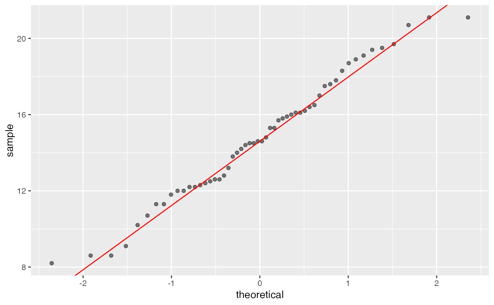
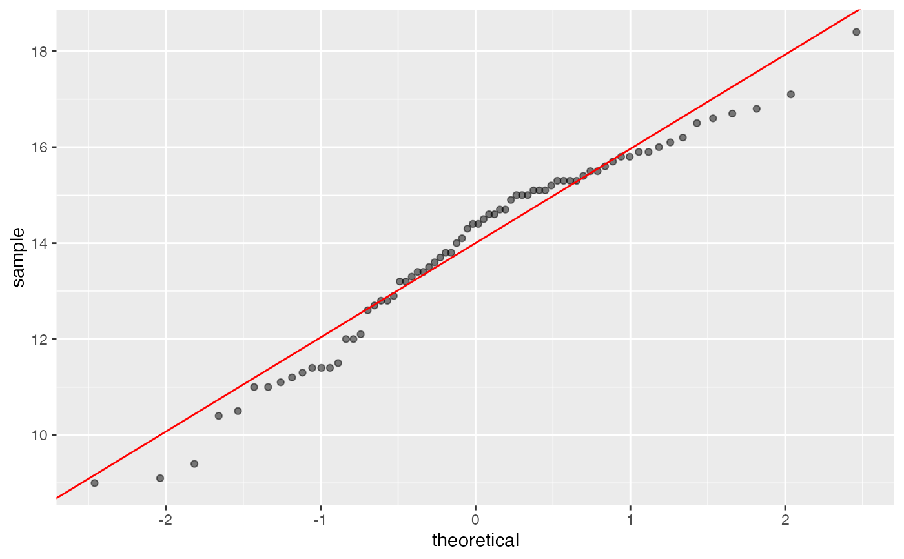
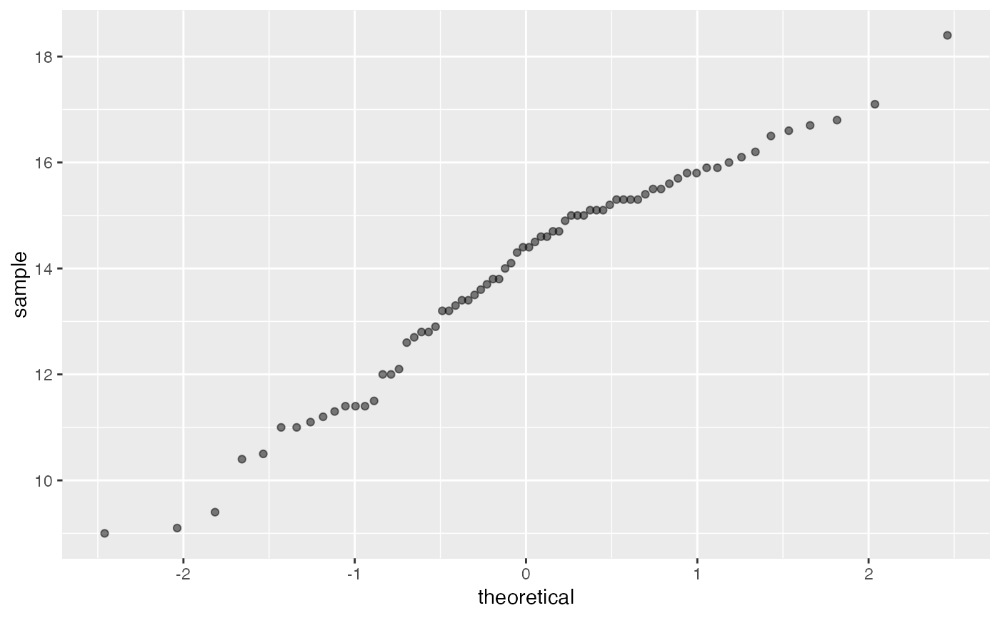

Dessine le graphique des quantiles ou qqplot et la droite
interquartile (passant par le premier et le troisième quartile à la manière
de la fonction qqline) avec la bibliothèque graphique
ggplot2.
Usage
gg_qqplot(
df,
var,
qdist = qnorm,
params = list(),
qq.line = TRUE,
color = "red",
alpha = 0.5
)Arguments
- df
Un jeu de données (dataframe)
- var
Le nom d'une variable de df
- qdist
La fonction quantile d'une (famille de) distribution. Par défaut celle de la famille des lois normales.
- params
Une liste de paramètres pour spécifier la loi à utiliser. Par défaut la loi normale centrée et réduite. Les paramètres peuvent être estimés avec la fonction
fitdistrde la bibliothèque MASS.- qq.line
Une valeur logique. Affiche ou masque la droite interquartile.
- color
Le nom d'une couleur. Spécifie la couleur à utiliser pour la droite interquartile.
- alpha
Indice de transparence. Spécifie la transparence à utiliser pour représenter les valeurs de l'échantillon.
Value
- ggplot
Un graphique utilisant la bibliothèque ggplot2. Affiche les valeurs des quartiles théoriques par lesquels passe la droite ainsi que son ordonnée à l'origine et sa pente si le tracé de celle-ci est demandé.
Author
Frédéric Bertrand
frederic.bertrand@lecnam.net
https://fbertran.github.io/homepage/
Maumy-Bertrand
myriam.maumy@ehesp.fr
https://www.ehesp.fr/annuaire/enseignement-recherche/myriam-maumy/
Examples
glycine.blanche<-subset(Mesures,subset=(Mesures$espece=="glycine blanche"))
gg_qqplot(glycine.blanche,"taille")
#> 1st quartile : -0.674489750196082
#> 3rd quartile : 0.674489750196082
#> Intercept : 14.6
#> Slope : 3.37292004710024

#bonus ajustement avec une autre loi (ici Student (car dist = qt) dont on estime les ddl)
lauriers.roses<-subset(Mesures,subset=(Mesures$espece=="laurier rose"))
shapiro.test(lauriers.roses$taille)
#>
#> Shapiro-Wilk normality test
#>
#> data: lauriers.roses$taille
#> W = 0.96457, p-value = 0.04021
#>
#pas issu d'une loi normale au risque alpha=5%
gg_qqplot(lauriers.roses,"taille")
#> 1st quartile : -0.674489750196082
#> 3rd quartile : 0.674489750196082
#> Intercept : 14
#> Slope : 1.96444793951992

gg_qqplot(lauriers.roses,"taille",qq.line=FALSE)

#essayons un qqplot avec une loi de Student
if (FALSE) { # \dontrun{
require(MASS)
params <- as.list(fitdistr(lauriers.roses$taille, "t")$estimate)
#avec la droite
gg_qqplot(lauriers.roses,"taille",qt,params)
#essayons un qqplot avec une loi gamma
params <- as.list(fitdistr(lauriers.roses$taille,"gamma")$estimate)
#avec la droite
gg_qqplot(lauriers.roses,"taille",qgamma,params)
#essayons un qqplot avec une loi du chi-deux
params <- list(df=fitdistr(lauriers.roses$taille,"chi-squared",start=list(df=5),
method="Brent",lower=1,upper=40)$estimate)
#avec la droite
gg_qqplot(lauriers.roses,"taille",qchisq,params)
} # }